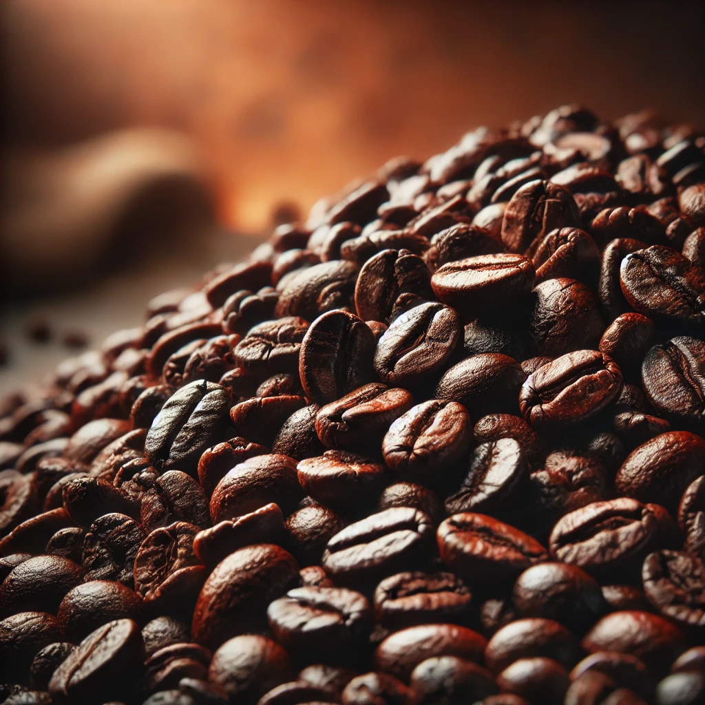

Robusta
Jika kamu termasuk penikmat kopi yang suka rasa kuat, pekat, dan penuh karakter, maka kopi robusta adalah teman sejati. Dengan kandungan kafein yang lebih tinggi, rasa pahit yang mantap, dan aroma earthy yang khas, biji robusta seringkali jadi pilihan buat kamu yang butuh tenaga ekstra di pagi hari — atau malam panjang penuh deadline.
Tapi tunggu dulu, robusta bukan cuma soal "kopi yang kuat". Lewat sentuhan kreativitas, biji ini bisa diolah jadi berbagai minuman yang nggak kalah nikmat dari arabika.

Robusta adalah salah satu jenis kopi yang berasal dari tanaman Coffea canephora. Dibandingkan dengan Arabika, kopi Robusta memiliki rasa yang lebih kuat, cenderung pahit, dan memiliki tingkat keasaman yang lebih rendah. Kopi ini mengandung lebih banyak kafein, yang membuatnya lebih pahit tetapi juga lebih kaya akan crema (lapisan busa) saat diseduh, terutama dalam espresso. Robusta biasanya tumbuh di dataran rendah dan lebih tahan terhadap hama serta penyakit dibandingkan Arabika. Kopi ini banyak dibudidayakan di negara-negara seperti Vietnam, Indonesia, Brasil, dan Afrika Barat. Robusta sering digunakan dalam campuran espresso dan juga dalam kopi instan karena kekuatan rasanya dan harganya yang lebih ekonomis dibandingkan Arabika. Di bawah ini adalah beberapa menu yang kami racik khusus untuk memaksimalkan potensi rasa dari robusta — dari yang klasik sampai yang kekinian. Siap untuk eksplorasi rasa?
#1. Kopi Tubruk Robusta Tradisional
Ini dia menu sejuta umat yang nggak lekang oleh waktu. Cukup seduh robusta dengan air panas, tanpa filter, dan nikmati seduhan pekat dengan aroma khas. Tambahkan gula aren kalau ingin sentuhan manis alami. Simpel, berani, dan bikin melek!
#2. Robusta Cold Brew Bold
Diseduh dingin selama 12–16 jam, cold brew berbasis robusta menghadirkan sensasi smooth tapi tetap strong. Nikmat diminum dingin saat siang terik, atau dicampur susu dan sirup vanilla buat twist yang creamy.
#3. Es Kopi Susu Robusta
Kalau kamu suka yang creamy tapi tetap “nendang”, ini pilihan tepat. Espresso robusta dipadukan dengan susu segar dan gula aren — menghasilkan keseimbangan rasa antara pahit dan manis, cocok jadi menu andalan harian.
#4. Robusta Mocha Hitam
Cokelat dan kopi adalah duo maut — apalagi kalau keduanya punya karakter yang kuat. Minuman ini memadukan espresso robusta dengan dark chocolate dan steamed milk. Rasanya? Pekat, pahit-manis, dan bikin ketagihan.
#5. Affogato Robusta
Satu scoop es krim vanila yang disiram espresso robusta panas. Permainan suhu dan rasa yang kontras membuatnya jadi dessert sekaligus kopi. Sempurna untuk sore santai atau akhir minggu.
0 Comments